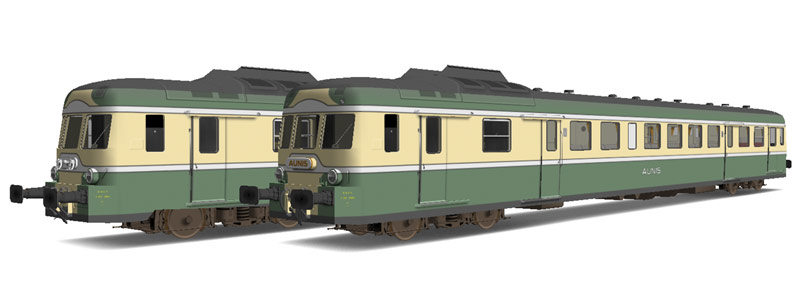
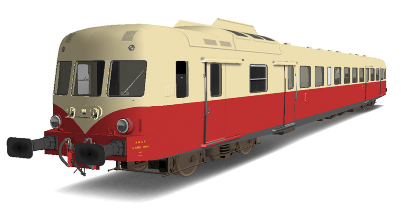
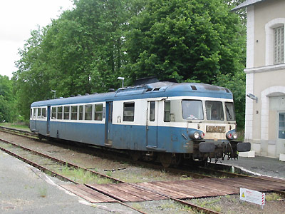
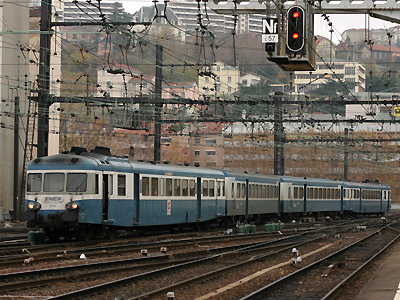
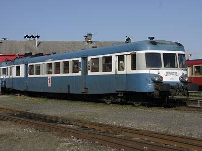
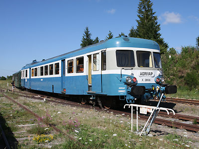
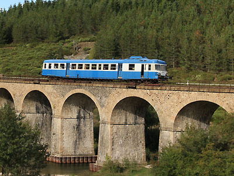
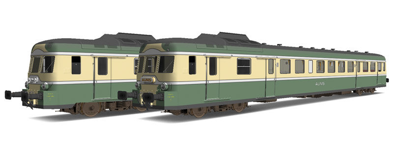
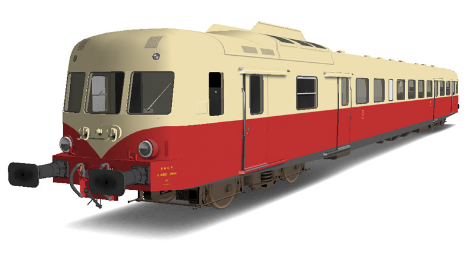

L'X 2800 version 
Yann Jansé a réalisé deux X 2800 première classe, et plus récemment, l'X 2804 en version d'origine.
(Téléchargeables sur ASW)


X 2800 - U825
Le Bleu d'Auvergne
La construction d'autorails puissants avait recours à l'emploi de plusieurs moteurs de 300 chevaux. Ce qui posait des soucis de synchronisation, un entretien assez coûteux et un encombrement diminuant d'autant le nombre de places à bord. La mise au point de moteurs rapides et puissants permit de développer des autorails monomoteurs de 825ch.
L'X 2800 est donc un engin fortement dérivé de l'X 2400 et troque les deux V12 renault 517 de 300ch contre un unique V12 MGO de 825ch. Comme son prédécesseur il a un équivalent bi-caisse : Les RGP 1.
Construits à 119 exemplaires, les 16 premiers engins sortent de l'usine Decauville de Corbeil. L'usine Renault de Choisy-le-roi fabriqua le reste.
Quelques données techniques
Constructeur : Decauville puis Renault
Motorisation : V12 MGO turbocompressé, échappement libre
Transmission : Boite de vitesse automatique Maybach Mekydro à 4 rapports et convertisseur hydraulique.
Puissance totale : 825ch
Aptitude à l'UM avec les X 2100, 2200 et eux-mêmes (2 engins moteur maxi)
Vitesse max : 120 km/h, portée à 140 km/h sur certains engins reconnaissables à leur dispositif lave-glace.
Longueur : 27,730 m
Masse : 54t
Pour plus d'info :
La fiche X 2800 sur Wikipedia
Fiche technique des X 2800 de Florent Brisou
L'inventaire des X 2800 sur Trains du Sud-Ouest

L'X2822 à Pompadour (06/06/2002)

L'X 2910 refoule sa rame dans l'avant-gare de Lyon Perrache (04/12/2004)

L'X 2910 à Lyon Vaise (10/03/2007)

Préservé par l'Agrivap, l'X2856 à la Chaise-Dieu (12/08/2009)

L'X 2819 préservé par l'AP2800 sur le viaduc de Bouchatel en Lozère (18/09/2011)
L'X 2800 version 
Yann Jansé a réalisé deux X 2800 première classe, et plus récemment, l'X 2804 en version d'origine.
(Téléchargeables sur ASW)

